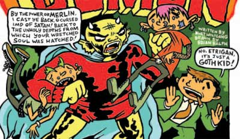

Etrigan

Excuse me, doesn’t Etrigan speak only in rhyming verse? Do these indie creators know nothing?
Excuse me, doesn’t Etrigan speak only in rhyming verse? Do these indie creators know nothing?
Here’s something I just thought of. I don’t know, it might be crazy talk, but I’ll tell you about it and you can tell me what you think.
When I lamented the action movie’s triumph over the romantic comedy in Spider-Man 2, I meant it. Spider-Man 2’s pairing of romantic comedy and superheroism is no mere accident of narrative—the romantic comedy and the superhero story have a crucial intersection, which is the recurring conceit of the duplicitous hero whose dual identity first covers and eventually discovers (to use an archaic sense of the word) a seriously fractured and incomplete identity. In superhero stories, this is manifested in the opposed secret and superheroic identities, the thesis and antithesis that never synthesize. Superman’s possession of two identities (or three, if Smallville Clark is different from Metropolis Clark) highlights his lack of a natural, coherent identity. He is a Kryptonian, an Earthling, and an American, but he’s also none of them. They are masks he can wear and remove at will, not his face. Same with Batman, although The Dark Knight Returns is perhaps an attempt to synthesize Batman and Bruce Wayne. Romantic comedies often present similar, usually less heroic, dual-identity protagonists—the most relevant standard for what I’m thinking about now is the story of a man trying to make it with two girlfriends at once, a story that inevitably climaxes with a scene where the poor bastard tries to take both women on date to the same restaurant at the same time.
Scott Pilgrim’s Precious Little Life replays the classic same-restaurant-same-time scene, except that Scott is too inept to realize that it might cause problems to invite both Knives and Ramona to his concert, let alone that he should do anything about it. That scene is also the one in which it turns out Scott was only half-joking (if that!) about being a graduate of Professor Xavier’s School for Gifted Youngsters. Scott really is thinks of himself as a superhero, if a highly unusual one. It can’t be coincidental that the book’s sidelong riffing on romantic comedy comes to a head in the same scene as the sidelong riffing on superheroes comes to a head. The climactic scene where the pop-culture fantasy (it’s all allusions to Star Trek technology, video games and musicals) that creeps through the book jumps up and really rocks out.
Judging by the previews (1, 2), the second Scott Pilgrim volume, Scott Pilgrim vs. the World, is going to throw awkward-adolescent maturation stories into the mix—not surprising, since that’s another kind of story founded on identity formation and identity crises, as well as a common component of romantic comedies and superhero stories.
So what? I’m not sure, what do you think?
Edit: Changed “Scott really is a superhero” to “Scott really thinks of himself as a superhero”
We’ve activated an anti-comment-spam option that’s new in WordPress 1.5: comments from authors with previously approved comments are whitelisted, and all other comments are queued for approval (or deletion) by us. The whitelisting is keyed on email address, so if you don’t provide an email address, your comment will be queued for moderation. To be clear: you aren’t required to provide an email address when you post a comment, but if you don’t, or if you’re commenting for the first time, your comment will not appear immediately. We get a few dozen comment spams a day, so we have a lot to sift through—if your comment doesn’t appear for several hours, don’t worry, and please don’t try to post it again.
Also, our WordPress seems to be having trouble remembering comment-author names—it should remember your name if you have cookies enabled—so check to see if your name has been filled in before you publish a comment. Hopefully we’ll have this minor problem fixed soon.
David Mack’s problem with poetry is, he keeps writing these frightening sing-songy nursery rhymes. Alan Moore’s problem is that he writes show tunes.
Neither of them should ever write poetry, but they do anyway!
I am perhaps not reading this in the way it was intended (and I’m doing it on purpose, even!)—but if I were Warren Ellis, this preview isn’t quite the sort of publicity I’d hope for:
…Jones is very much an original character. Where Spider Jerusalem would use a bowel disrupter to incapacitate his “victims,” Jones gouges their eyeballs out with his own fingers.
Well, it’s a day after I post my new year’s resolution and I’m posting this? It’s all meant to be jovial good fun, I promise. The problem with my new year’s resolution is that it makes me reluctant to poke even good-natured fun, because the internet is such an anti-jovial zone.
Debating Iron Council: A bunch of essays about China Miéville's books, with a lengthy response from Miéville.
I can’t believe I’m making a new year’s resolution. Well, I’m not really, though, except in that I resolved to do this coincidentally at the beginning of the year.
This year, I am going to avoid snarky ripostes, gibes, and other such verbal attacks. They are seem counter to the spirit of public conversation I have claimed to enjoy most about blogging. I think most targets of past zingers deserved them (insofar as anybody deserves to be zinged), and I came up with some pretty good ones, and it was usually fun at the time. But I read a nasty bit of bile on a blog yesterday, and it annoyed me—until I remembered I’d spilled a little of my own bile on that same blogger a while ago. Oops.
I’m not asking “Why can’t we all get along?” or vowing never again to get into an argument or ‘agreeing to disagree’ with people I disagree with. I hope only to stop myself doing things that annoy me when other people do them and to engage in reasonable conversation—including argument.
(This might look like the sort of self-pitying sadness that bloggers with impaired self-esteem post so they can bask in sycophantic commenters telling them how wonderful they are and not at all as bad as they think. It isn’t, so you don’t need to comment to tell me how reasonable and kind I am. Because you were going to… right? Right?)
Edit: I also resolve to post much more often. Probably.
From Gerald Graff’s Clueless in Academia: How Schooling Obscures the Life of the Mind (which I haven’t read except for the online preview but which I hope to read soon):
But who gives a fig, you ask, about “the academic conversation,” which is often a bad conversation, boring, self-important, and dominated by insider orthodoxies? Academic conversations are often all these things, to be sure, but at their best moments they are more valuable and pertinent to students’ lives than academic-bashers give them credit for. Even so, you persist, isn’t the point of education to produce good citizens, not more academics? Surely it is, but these goals are compatible, for the issues and problems addressed by academic research and teaching are increasingly indistinguishable from the issues we wrestle with as public citizens. The point is not to turn students into clones of professors but to give them access to forms of intellectual capital that have a lot of power in the world.
Those who charge that academic discourse is itself the problem fail to see that talk about books and subjects is as important educationally as are the books and subjects themselves. For the way we talk about a subject becomes part of the subject, a fact that explains why we have book-discussion groups to supplement solitary reading, why Trekkies form clubs and hold conferences as well as privately enjoying Star Trek, and why sports talk call-in shows and sports journalism have arisen alongside the games themselves. Students must not only read texts, but find things to say about them, and no text tells you what to say about it. So our habit of elevating books and subjects over the secondary talk about them only helps keep students tongue-tied.
Another:
…one form the academic/popular culture contrast still takes is the complaint that schools and colleges fight a losing battle with popular entertainment for the hearts and minds of the young. The culture of ideas and arguments, so the complaint runs, is constantly overwhelmed and negated by visceral experience and spectacle. How can Socrates, Mill, and Henry James hope to compete for students’ attention with “Survivor,” the Spice Girls, the World Wrestling Federation, and the latest Schwarzenegger/Stallone action hero blockbuster?
The complaint makes sense up to a point, but it is misleading in two ways: first, from an educational point of view, the real opposition should be not between Henry James and the Spice Girls, but between intellectual and nonintellectual discussion of Henry James and the Spice Girls or any other subject. As I have noted, it is not the object in itself that creates problems for students but the public, academic ways of analyzing, arguing, and talking about the object. Members of the Spice Girls fan club do not read academic analyses of the Spice Girls (though if they were students, asking them to do so would be a way to draw them into academic culture).
An essay on postmodern remix aesthetic in Moulin Rouge and Kill Bill from a college film class I took last year. I don’t necessarily agree with all of it anymore, but I don’t necessarily disagree with any of it.
Superhuman Genealogy: An explanation for the advent of superhumans (in some strange collective-unconscious fanficworld that encompasses the Marvel and DC universes, Star Trek, Stephen King novels, and everything else), the origin being Clark Kent, whose Kryptonian DNA spread through blood transfusions during his service in World War I. Brilliant madness!
Peiratikos is powered by WordPress and Ping-O-Matic. It uses valid XHTML. View our Accessibility statement.
Copyright © 2003-2009 Rose Curtin and Steven Berg. Published under a Creative Commons License
{kind=link}
{kind=link}